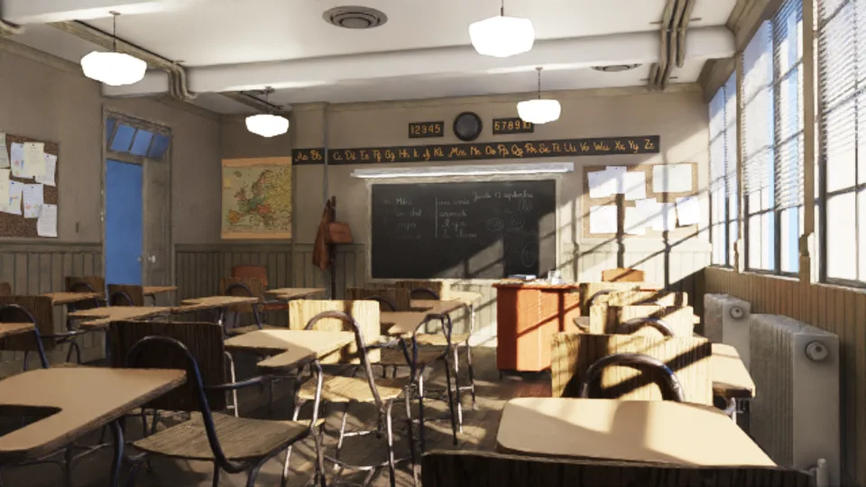

Graphics programming · Interactive guide
From one neuron to a radiance cache.
Train a function with two hidden neurons. Then follow a ray through Classroom to see how a bigger version learns the light that bounces back.
Start the walkthrough
Start here
A neuron is a few lines of code
Imagine a function that takes one number and gives you a number back. Give the function two settings it can keep between calls. The weight says how much to multiply the input by. The bias says how much to add afterward.
function neuron(x, weight, bias) {
const z = weight * x + bias
return Math.max(0, z)
}
The last line is ReLU, short for rectified linear unit. Read it as “keep the number if it’s positive, otherwise return zero.” Try three calls in your head: ReLU(−2) = 0, ReLU(0) = 0, and ReLU(3) = 3. ReLU has no settings of its own.
Be the neuron
One input, two settingsStart at x = 2. Predict the answer, then move the bias from −0.50 to −1.50 and see which line changes.
Who picks the numbers? You supply x each time you call the function. In this first lab you set w and b by hand. During training, code initializes them (often small random weights and zero biases), checks predictions against known answers, and updates them. During prediction it just reads their current values. The output y is the result of the arithmetic.
A classic perceptron makes a yes/no decision by comparing a weighted sum to a threshold. A modern multilayer perceptron connects groups of units in successive layers. The hidden units in this guide use ReLU, so a unit that switches on can pass along a value such as 0.50 or 3.00.
The model
One forward pass
A multilayer perceptron (MLP) is a function made of layers. You supply numbers, each layer computes new numbers, and the last layer returns a prediction. If you can write a dot product and a loop, you can run one. The weights are ordinary numbers shared across calls. Learning means changing those numbers using examples.
Start with a sensor dial. Its input x goes from 0 to 1. We want to predict the instrument’s measured response. A single neuron multiplies the input by a weight, adds a bias, then applies an activation. Here the activation is ReLU(z) = max(0, z). The bias moves the point where the neuron switches on. At the starting dial value of 0.75, neuron B computes max(0, 1 × 0.75 − 0.50) = 0.25.
Inside a tiny MLP
1 → 2 → 1A = ReLU(1.00 × x + 0.00) B = ReLU(1.00 × x − 0.50) y = 0.40 × A − 0.60 × B + 0.20
Which numbers in y are weights? Look at the last line above. Initially y = 0.40 × A − 0.60 × B + 0.20. The first two numbers are output weights. The last number, 0.20, is the output bias. A and B are the answers from two hidden neurons. At x = 0.75, they give 0.75 and 0.25, so the last line returns 0.30 − 0.15 + 0.20 = 0.35. This output neuron uses a plain weighted sum.
Try it. With the starting weights, set the dial to 0.25. Hidden B goes to zero. Cross 0.50 and B begins subtracting from the output. Two straight segments meet at a bend. Without an activation, stacking weighted sums would still give you a straight line.
That calculation is inference. A dense layer with several inputs does the same thing with a vector. Each output gets its own weighted sum of the previous layer. “Hidden” means the layer’s values are computed inside the function. Here is the whole forward pass in JavaScript for any number of inputs:
function neuron(inputs, weights, bias) {
return inputs.reduce((sum, x, i) => sum + x * weights[i], bias)
}
function predict(inputs, hiddenLayer, output) {
const hidden = hiddenLayer.map(({ weights, bias }) =>
Math.max(0, neuron(inputs, weights, bias)))
return neuron(hidden, output.weights, output.bias)
}
A hidden layer builds a set of reusable features. The output mixes them. For RGB, use three output neurons with their own weights and the same hidden values.
The learning loop
Teach it a curve
The lab generates nine synthetic calibration readings from a fixed curve. Each is a pair (dial, measured response). We know the desired output at those points. Training adjusts the weights and biases until the predictions get closer. The chart uses the very same network as the diagram above.
Calibration bench
0 updates- Predict. Run the nine dial values through the network using the current weights.
- Score. For each reading, square the difference between prediction and target. Average those squares to get mean squared error (MSE).
- Assign credit. Backpropagation uses the chain rule to find how much each weight affects that loss. For one reading, the output weight on A has gradient
2 × (prediction − target) × A. If the prediction is low and A is positive, raising that weight helps. - Update. Subtract a small multiple of each gradient from its weight or bias. Choose Train one step to see exactly how one output weight changed, or run 100 steps together. Return to the neuron diagram to inspect the learned coefficients.
Check the crosses. Those eight readings fall between the training points and never enter the updates. Lower error there is evidence the model can interpolate on this dial. It tells us little about a different sensor or inputs outside this range. For a real one-dimensional calibration, a lookup table with interpolation makes an excellent baseline.
The renderer
Follow the light
Look underneath a desk in Classroom. Even where the sun is blocked, light can bounce off the floor and reach the wood. A path tracer estimates that indirect contribution by tracing more rays. A neural radiance cache (NRC) learns a function that estimates the remaining contribution at a surface hit. Many paths can share what the weights have learned.
One displayed path
What goes into the cache?
The Classroom preset traces one bounce before the cache query. It encodes the hit position, normal, reflected view direction, roughness, and material color information into 64 numbers. Position uses triangle waves at four active frequency bands per axis, giving the network signals that vary at several spatial scales. Reflected direction helps distinguish two views of the same glossy floor.
64 features → 32 ReLU → 32 ReLU → 32 ReLU → 3 linear outputs
Those three outputs estimate indirect red, green, and blue in linear radiance units. This compact implementation uses weight matrices without biases. The tracer keeps emission and direct-light samples already gathered. It multiplies the predicted remainder by throughput, the accumulated path weight, before adding it to the pixel.
For one color channel, suppose the path has gathered 0.30, its throughput is 0.50, and the cache predicts 0.24 at the query. The pixel sample becomes 0.30 + 0.50 × 0.24 = 0.42. Predicting the whole pixel here would count some light twice.
Where do the answers come from?
Selected training paths continue deeper. For an earlier hit, the tracer gathers the contributions after that hit up to the training boundary. If the path reaches that boundary, it uses the cache’s current estimate for the remaining tail. It divides this sum by the earlier hit’s throughput, channel by channel, to build a target in the same units as the network output. A path that ends naturally supplies its traced remainder.
The compact preset trains inline using a depth-four training boundary. It uses Adam to scale weight updates and a relative loss that accounts for brightness. Display inference can use a moving average of the trained weights. Each frame provides fresh examples, so changing the sun changes the targets even when the camera stays still. Bootstrapping from the cache saves work and can also reinforce a bad estimate where training paths rarely go.
Try it in Classroom
Choose Plain PT / NRC and Raw radiance. Let the cache warm up, turn off Train every frame, then rotate the sun. Watch a shadowed desk as you turn training back on. Direct sunlight can react immediately while the learned indirect color takes updates to catch up. Switch to Final output to see what denoising and upscaling add. The image can keep accumulating with the weights frozen.
Open Classroom ↗Beyond rendering
Design your own
Write down the function signature first. What can you measure at prediction time? Who supplies a trustworthy target during training? What variation must survive the approximation? Here are three different answers.
Approximate a material response
Inputs Roughness, viewing angle, and lighting angle for one fixed material family. Target Reflectance from a slow numerical integration. Generate examples offline and concentrate some near grazing angles.
Test Hold out entire roughness values. Inspect highlight width and energy, then time a batch of queries against an interpolated lookup table. A smooth image can still have the wrong highlight.
Predict animation corrections
Build and test an elbow-correction MLP in the hands-on workshop ↗
Inputs Joint rotations for a particular rig. Target Corrective blendshape weights from an artist-approved rig evaluation. Train offline, then infer weights for each animated pose.
Test Hold out whole motion clips. Compare elbow and shoulder silhouettes with the original rig and a nearest-pose baseline. If the correction depends on motion history, two identical poses can need different answers. Add velocity or history, or narrow the task.
Extend lighting into a courtyard
Inputs Surface and direction features in a stable coordinate system. Target Indirect light sampled from the streamed geometry. Keep tracing during warm-up as new surfaces enter view. A shared model can accept new points immediately, but it needs evidence about their lighting.
Test Walk outside, wait, then revisit the first room. Watch for forgotten lighting and new-region bias. If streaming changes the scene bounds, renormalizing the same world point changes its input. Compare fixed bounds or region-local caches against the current setup.
A first prototype. Pick one expensive function you already trust. Record inputs and outputs, reserve a separate test set, and train a small model offline. Measure the largest error that matters to the application and total time including feature encoding and data movement. Online learning earns its cost when the target changes and you can keep collecting good examples.